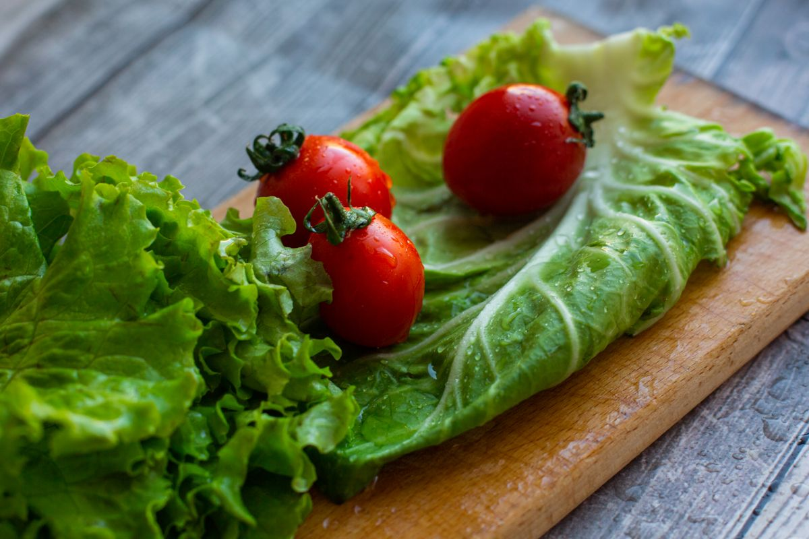

こだわり 01
注文後クッキングにこだわる理由
ファストフードは「速い」だけでいいのか。私たちはそう考えませんでした。パティは注文が入った瞬間に鉄板へ。作り置きは一切せず、常に焼きたての状態でお渡しします。待ち時間はほんの数分、でもその数分が美味しさの決め手です。
こだわり 02
毎朝仕入れる、新鮮な野菜
レタスやトマトは契約農家から毎朝届く分だけを使用。シャキシャキの食感とみずみずしさを保つため、その日仕入れた分がなくなり次第、翌朝まで販売を見送ることもあります。鮮度への妥協はしません。


こだわり 03
平均4分、ファストフードの誇り
出来立てにこだわりながらも、厨房オペレーションを磨き上げることで平均提供時間4分を実現。忙しいランチタイムでも、寄り道の合間でも、気軽に立ち寄れるお店でありたい。それがFLIP BURGERの原点です。